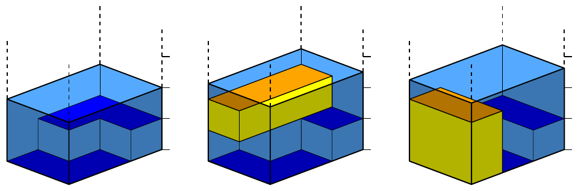

ACM-ICPC World Finals 2013 · Problem I
Pirate Dick finally had enough of fighting, marauding, theft, and making life miserable for many on the open seas. So he decided to retire, and he found the perfect island to spend the rest of his days on, provided he does not run out of money. He has plenty of gold coins now, and he wants to store them in a chest (he is a pirate after all). Dick can construct a rectangular chest with integer dimensions of any size up to a specified maximum size for the top but with an arbitrary integer height. Now he needs a place to hide the chest. While exploring the island, he found the perfect solution.
Dick will hide his chest by submerging it in a murky pond. The pond has a rectangular surface, and it completely fills the bottom of a valley that has high vertical rocky walls. Dick surveyed the pond and knows its depth for each of the squares of a Cartesian coordinate grid system placed on the pond surface. When Dick submerges the chest, it will sink as far as possible until it touches the bottom. The top of the chest will remain parallel to the pond’s surface and the chest will be aligned with the grid squares. The water displaced by the submerged chest will raise the level of the pond’s surface (this will occur even if there is no space around the chest for the displaced water to rise). The walls of the valley are high enough that the water can never splash out of the valley. Of course, since the chest must be invisible, its top must be strictly below the surface of the pond. Your job is to find the volume of the largest chest that Pirate Dick can hide this way.
In Figure I.1, the leftmost image shows a pond, the middle image shows a possible placement of a chest of volume 3, and the rightmost image shows a placement of a chest of volume 4, which is the maximum possible volume. Note that if the second chest were made one unit taller, its top would be visible because it would be at exactly the same height as the surface of the water.

The input consists of a single test case. A test case starts with a line containing four integers a, b, m, and n (1 ≤ a, b, m, n ≤ 500). The pond’s surface dimensions are m × n and the maximum size of the top (and bottom) of the chest is a × b. In addition, a and b are small enough that it is not possible to cover the entire pond with a chest with top size a × b. Each of the remaining m lines in a test case contains n integers di,j specifying the pond’s depth at grid square (i, j), where 0 ≤ di,j ≤ 109 for each 1 ≤ i ≤ m and 1 ≤ j ≤ n.
Display the maximum volume of a rectangular chest with integer dimensions (where one of the dimensions of the top is bounded by a and the other is bounded by b) that can be completely submerged below the surface of the pond. If no chest can be hidden in the pond, display 0.
3 1 2 3 2 1 1 2 2 1
4
4 1 1 5 2 0 2 2 2
12
2 3 3 5 2 2 2 2 2 2 2 2 2 2 2 2 2 2 2
18